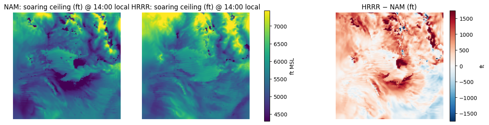
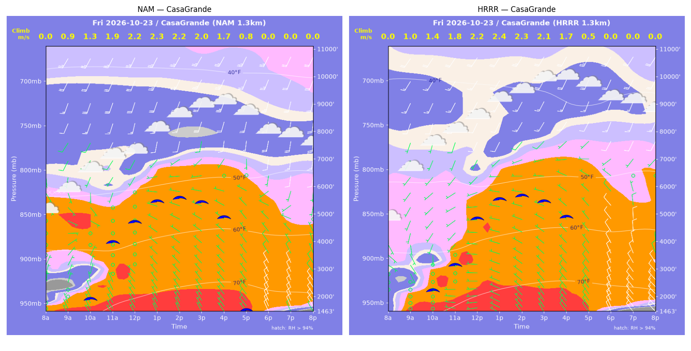
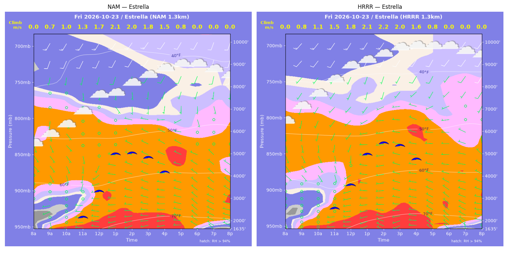
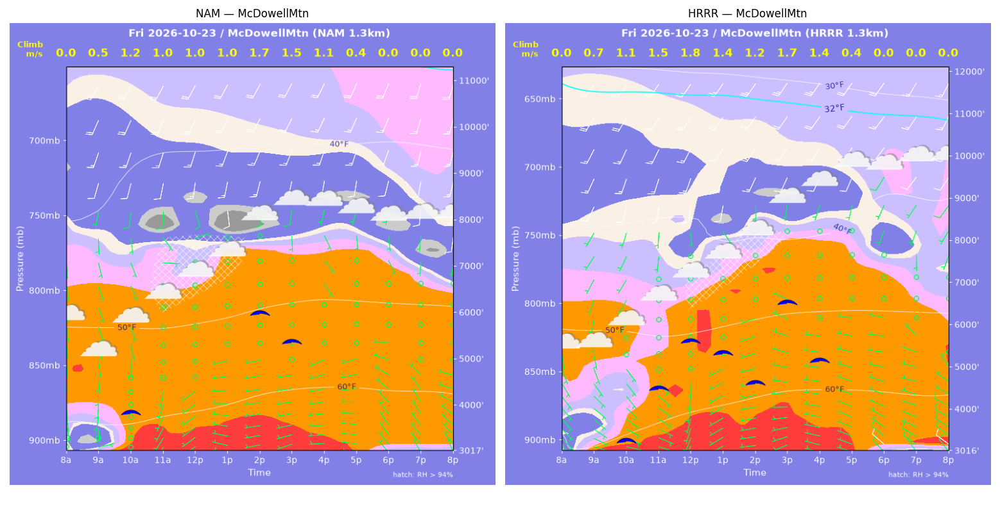
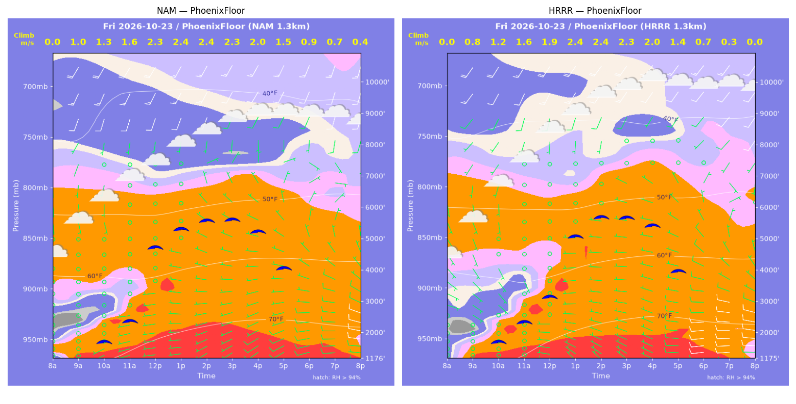
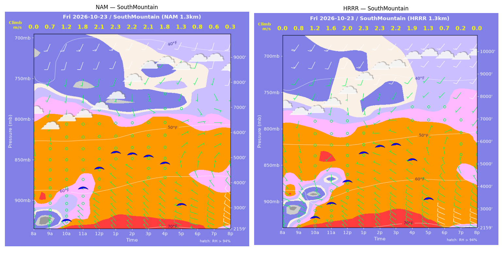
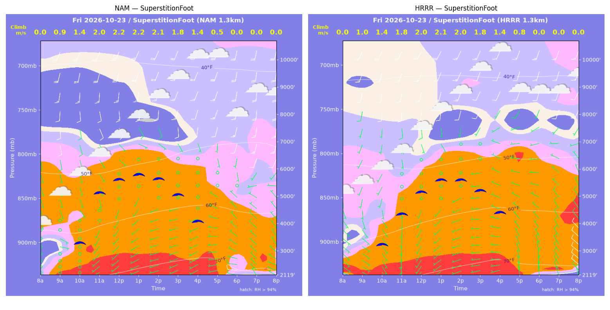
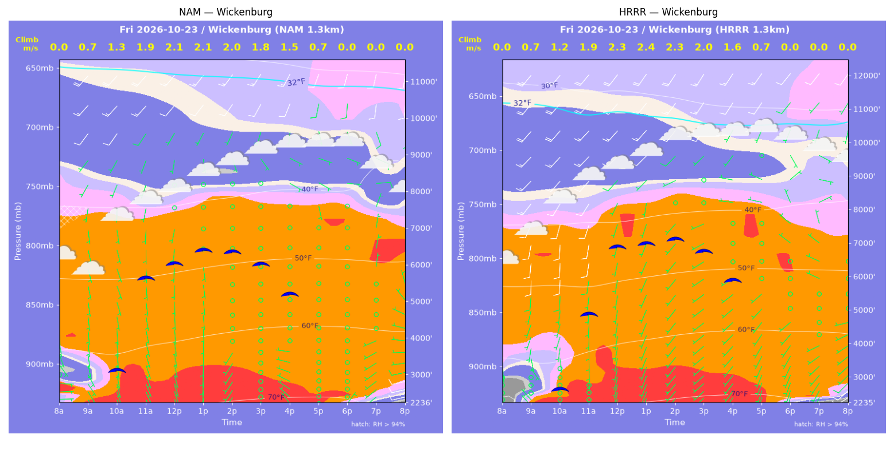

../runs/ab-phoenix-nam — model nam, cycle 2026-10-22 18z, dx 1.3333333740234374 km, 13 hours, grid 114×114../runs/ab-phoenix-hrrr — model hrrr, cycle 2026-10-22 18z, dx 1.3333333740234374 km, 13 hours, grid 114×114Grids identical; afternoon = 12:00–17:59 local (UTC-7). Δ = HRRR − NAM.
| Site | terrain ft | BL top (AGL) med|Δ| / bias (ft) | w* med|Δ| / bias (fpm) | Soaring ceiling med|Δ| / bias (ft) | BL wind speed med|Δ| / bias (kt) | BL wind dir med|Δ| / bias (deg) | 2 m temperature med|Δ| / bias (F) | Sfc LCL (AGL) med|Δ| / bias (ft) | Sensible heat flux med|Δ| / bias (W/m2) |
|---|---|---|---|---|---|---|---|---|---|
| PhoenixFloor | 1176 | 260 / -254 | 7 / -16 | 168 / -248 | 1 / -1 | 111 / +17 | 0 / +0 | 1028 / +1048 | 6 / -6 |
| SouthMountain | 2160 | 690 / +530 | 16 / +10 | 378 / +348 | 1 / +0 | 47 / +5 | 1 / +1 | 1152 / +1097 | 4 / -6 |
| SuperstitionFoot | 2120 | 418 / +388 | 16 / -1 | 174 / -32 | 2 / -1 | 40 / +39 | 0 / -0 | 281 / +10 | 18 / -15 |
| Estrella | 1635 | 465 / +409 | 22 / +17 | 359 / +302 | 0 / +1 | 26 / +37 | 1 / +1 | 1261 / +1180 | 17 / +14 |
| Wickenburg | 2236 | 691 / +691 | 49 / +39 | 721 / +607 | 1 / +2 | 123 / +55 | 1 / +1 | 1141 / +1145 | 43 / +36 |
| CasaGrande | 1463 | 72 / -39 | 11 / -3 | 66 / +61 | 1 / -0 | 23 / +25 | 0 / +0 | 994 / +1016 | 12 / +8 |
| McDowellMtn | 3017 | 744 / +611 | 63 / +43 | 1729 / +1140 | 2 / -1 | 15 / -0 | 1 / +1 | 443 / +641 | 31 / +28 |
| Metric | n | median |Δ| | p90 |Δ| | bias |
|---|---|---|---|---|
| BL top (AGL) (ft) | 42 | 535 | 1045 | +334 |
| w* (fpm) | 42 | 21 | 60 | +13 |
| Soaring ceiling (ft) | 42 | 299 | 1318 | +311 |
| BL wind speed (kt) | 42 | 1 | 3 | -0 |
| BL wind dir (deg) | 42 | 38 | 153 | +25 |
| 2 m temperature (F) | 42 | 1 | 1 | +0 |
| Sfc LCL (AGL) (ft) | 42 | 1026 | 1297 | +877 |
| Sensible heat flux (W/m2) | 42 | 15 | 48 | +9 |
diffmap_tol.png| local | BL top NAM/HRRR ft | w* NAM/HRRR fpm | ceiling NAM/HRRR ft | BL wind NAM/HRRR | T2 NAM/HRRR F | HFX NAM/HRRR |
|---|---|---|---|---|---|---|
| 08:00 | 0 / 0 | 0 / 0 | 1176 / 1176 | 1kt@189 / 1kt@354 | 66 / 64 | 0 / 0 |
| 09:00 | 1203 / 954 | 189 / 164 | 1176 / 1176 | 0kt@282 / 1kt@132 | 69 / 67 | 87 / 71 |
| 10:00 | 1566 / 1623 | 249 / 245 | 1747 / 1737 | 0kt@279 / 4kt@133 | 71 / 70 | 154 / 141 |
| 11:00 | 2266 / 2238 | 315 / 309 | 2400 / 2361 | 1kt@233 / 3kt@154 | 73 / 73 | 215 / 205 |
| 12:00 | 5263 / 3196 | 444 / 373 | 4717 / 3143 | 1kt@086 / 1kt@226 | 75 / 75 | 260 / 254 |
| 13:00 | 5952 / 5631 | 470 / 464 | 5273 / 5034 | 2kt@116 / 1kt@272 | 77 / 77 | 273 / 278 |
| 14:00 | 6288 / 6450 | 472 / 477 | 5510 / 5639 | 2kt@079 / 0kt@160 | 78 / 78 | 262 / 264 |
| 15:00 | 6440 / 6542 | 449 / 449 | 5528 / 5599 | 3kt@033 / 2kt@316 | 78 / 79 | 220 / 218 |
| 16:00 | 6213 / 6611 | 398 / 389 | 5142 / 5348 | 3kt@001 / 0kt@206 | 79 / 79 | 159 / 141 |
| 17:00 | 5461 / 5661 | 300 / 285 | 3980 / 3898 | 5kt@016 / 5kt@333 | 78 / 78 | 78 / 65 |
| 18:00 | 2914 / 2351 | 181 / 145 | 1176 / 1176 | 5kt@300 / 8kt@284 | 77 / 77 | 32 / 20 |
| 19:00 | 2308 / 748 | 135 / 59 | 1176 / 1176 | 8kt@294 / 11kt@269 | 76 / 76 | 17 / 4 |
| 20:00 | 661 / 1141 | 73 / 0 | 1176 / 1176 | 11kt@276 / 10kt@281 | 75 / 75 | 9 / -2 |
| local | BL top NAM/HRRR ft | w* NAM/HRRR fpm | ceiling NAM/HRRR ft | BL wind NAM/HRRR | T2 NAM/HRRR F | HFX NAM/HRRR |
|---|---|---|---|---|---|---|
| 08:00 | 0 / 0 | 0 / 0 | 2160 / 2159 | 2kt@266 / 3kt@013 | 65 / 64 | 0 / 0 |
| 09:00 | 468 / 775 | 141 / 155 | 2160 / 2159 | 1kt@012 / 4kt@118 | 65 / 65 | 93 / 74 |
| 10:00 | 1307 / 1494 | 241 / 245 | 2577 / 2674 | 1kt@203 / 5kt@144 | 67 / 67 | 164 / 152 |
| 11:00 | 2807 / 2094 | 359 / 314 | 3844 / 3285 | 1kt@123 / 4kt@142 | 68 / 69 | 254 / 228 |
| 12:00 | 3739 / 3288 | 417 / 395 | 4605 / 4251 | 1kt@143 / 2kt@201 | 70 / 70 | 300 / 291 |
| 13:00 | 4510 / 4878 | 451 / 461 | 5215 / 5494 | 4kt@151 / 3kt@147 | 71 / 72 | 316 / 313 |
| 14:00 | 4443 / 5267 | 437 / 462 | 5127 / 5762 | 2kt@149 / 4kt@185 | 72 / 73 | 291 / 292 |
| 15:00 | 4440 / 5501 | 407 / 438 | 5029 / 5837 | 2kt@126 / 3kt@221 | 72 / 73 | 236 / 237 |
| 16:00 | 4320 / 4895 | 358 / 369 | 4748 / 5151 | 2kt@109 / 2kt@332 | 73 / 73 | 165 / 160 |
| 17:00 | 2673 / 3478 | 247 / 249 | 3109 / 3428 | 5kt@025 / 5kt@004 | 72 / 73 | 88 / 69 |
| 18:00 | 1783 / 1751 | 165 / 134 | 2160 / 2159 | 6kt@319 / 7kt@309 | 71 / 72 | 39 / 21 |
| 19:00 | 1482 / 183 | 126 / 41 | 2160 / 2159 | 8kt@314 / 11kt@286 | 71 / 71 | 21 / 6 |
| 20:00 | 232 / 932 | 59 / 0 | 2160 / 2159 | 11kt@291 / 9kt@292 | 70 / 70 | 14 / -4 |
| local | BL top NAM/HRRR ft | w* NAM/HRRR fpm | ceiling NAM/HRRR ft | BL wind NAM/HRRR | T2 NAM/HRRR F | HFX NAM/HRRR |
|---|---|---|---|---|---|---|
| 08:00 | 0 / 0 | 0 / 0 | 2120 / 2120 | 2kt@103 / 7kt@115 | 64 / 65 | 0 / 0 |
| 09:00 | 1155 / 1474 | 175 / 201 | 2120 / 2120 | 3kt@099 / 7kt@132 | 67 / 68 | 71 / 83 |
| 10:00 | 2576 / 2469 | 282 / 280 | 3336 / 3272 | 4kt@161 / 5kt@174 | 70 / 69 | 134 / 135 |
| 11:00 | 4762 / 3768 | 392 / 355 | 5138 / 4365 | 8kt@155 / 2kt@183 | 72 / 71 | 196 / 182 |
| 12:00 | 5265 / 4724 | 428 / 400 | 5604 / 5144 | 10kt@159 / 6kt@163 | 73 / 72 | 231 / 208 |
| 13:00 | 5460 / 5287 | 436 / 415 | 5763 / 5571 | 9kt@155 / 8kt@176 | 74 / 73 | 235 / 209 |
| 14:00 | 5333 / 5372 | 414 / 401 | 5594 / 5565 | 9kt@161 / 7kt@187 | 74 / 74 | 207 / 185 |
| 15:00 | 4815 / 5110 | 359 / 355 | 5008 / 5163 | 5kt@151 / 3kt@212 | 75 / 75 | 149 / 134 |
| 16:00 | 4240 / 4938 | 274 / 275 | 4034 / 4365 | 2kt@112 / 4kt@286 | 75 / 75 | 75 / 64 |
| 17:00 | 2901 / 4908 | 97 / 156 | 2120 / 2120 | 3kt@306 / 5kt@253 | 74 / 73 | 5 / 11 |
| 18:00 | 725 / 1465 | 0 / 0 | 2120 / 2120 | 7kt@294 / 7kt@329 | 69 / 71 | -6 / -2 |
| 19:00 | 1045 / 1243 | 0 / 0 | 2120 / 2120 | 7kt@311 / 8kt@329 | 68 / 69 | -4 / -3 |
| 20:00 | 529 / 762 | 0 / 0 | 2120 / 2120 | 5kt@297 / 9kt@310 | 67 / 68 | -2 / -8 |
| local | BL top NAM/HRRR ft | w* NAM/HRRR fpm | ceiling NAM/HRRR ft | BL wind NAM/HRRR | T2 NAM/HRRR F | HFX NAM/HRRR |
|---|---|---|---|---|---|---|
| 08:00 | 0 / 0 | 0 / 0 | 1635 / 1635 | 4kt@252 / 1kt@228 | 61 / 62 | 0 / 0 |
| 09:00 | 644 / 785 | 139 / 150 | 1635 / 1635 | 2kt@203 / 1kt@187 | 65 / 66 | 63 / 65 |
| 10:00 | 1015 / 1309 | 200 / 223 | 1635 / 1635 | 1kt@252 / 1kt@142 | 67 / 68 | 120 / 130 |
| 11:00 | 1532 / 1986 | 255 / 287 | 2228 / 2596 | 0kt@208 / 2kt@161 | 69 / 70 | 165 / 183 |
| 12:00 | 3004 / 3305 | 337 / 358 | 3356 / 3617 | 2kt@178 / 3kt@187 | 72 / 73 | 195 / 216 |
| 13:00 | 5159 / 5085 | 410 / 419 | 4983 / 4967 | 3kt@150 / 3kt@235 | 73 / 74 | 206 / 224 |
| 14:00 | 5293 / 5798 | 395 / 424 | 5002 / 5458 | 3kt@168 / 3kt@243 | 74 / 75 | 179 / 205 |
| 15:00 | 5268 / 5908 | 360 / 386 | 4801 / 5343 | 3kt@172 / 4kt@215 | 75 / 76 | 136 / 151 |
| 16:00 | 5113 / 5771 | 290 / 312 | 4148 / 4719 | 3kt@263 / 5kt@273 | 75 / 75 | 73 / 81 |
| 17:00 | 4395 / 4821 | 152 / 149 | 1635 / 1635 | 3kt@273 / 4kt@273 | 74 / 74 | 12 / 10 |
| 18:00 | 389 / 568 | 0 / 0 | 1635 / 1635 | 4kt@301 / 6kt@308 | 71 / 70 | -0 / -3 |
| 19:00 | 84 / 84 | 0 / 0 | 1635 / 1635 | 3kt@321 / 3kt@343 | 69 / 69 | -1 / -1 |
| 20:00 | 264 / 84 | 0 / 0 | 1635 / 1635 | 5kt@287 / 1kt@026 | 68 / 68 | -0 / -0 |
| local | BL top NAM/HRRR ft | w* NAM/HRRR fpm | ceiling NAM/HRRR ft | BL wind NAM/HRRR | T2 NAM/HRRR F | HFX NAM/HRRR |
|---|---|---|---|---|---|---|
| 08:00 | 0 / 0 | 0 / 0 | 2236 / 2235 | 3kt@096 / 2kt@303 | 62 / 58 | 0 / 0 |
| 09:00 | 925 / 558 | 144 / 133 | 2236 / 2235 | 3kt@150 / 1kt@352 | 66 / 64 | 47 / 63 |
| 10:00 | 2500 / 1700 | 252 / 232 | 3174 / 2677 | 5kt@170 / 4kt@187 | 69 / 67 | 94 / 112 |
| 11:00 | 5550 / 4389 | 376 / 365 | 5668 / 4898 | 4kt@190 / 10kt@187 | 70 / 70 | 143 / 169 |
| 12:00 | 5889 / 6793 | 406 / 461 | 6036 / 6875 | 2kt@187 / 8kt@223 | 71 / 72 | 170 / 221 |
| 13:00 | 6361 / 6881 | 415 / 468 | 6389 / 6967 | 1kt@170 / 4kt@220 | 72 / 72 | 168 / 230 |
| 14:00 | 6377 / 7174 | 399 / 452 | 6314 / 7098 | 1kt@102 / 3kt@241 | 72 / 73 | 148 / 198 |
| 15:00 | 6245 / 6963 | 357 / 403 | 5969 / 6709 | 2kt@079 / 2kt@267 | 73 / 73 | 108 / 144 |
| 16:00 | 5985 / 6648 | 288 / 318 | 5153 / 5856 | 3kt@112 / 3kt@282 | 73 / 73 | 58 / 74 |
| 17:00 | 5735 / 6280 | 140 / 138 | 2236 / 2235 | 3kt@168 / 3kt@276 | 72 / 72 | 6 / 6 |
| 18:00 | 333 / 815 | 0 / 0 | 2236 / 2235 | 2kt@011 / 6kt@201 | 69 / 68 | -0 / -4 |
| 19:00 | 626 / 500 | 0 / 0 | 2236 / 2235 | 7kt@235 / 7kt@214 | 67 / 66 | -3 / -6 |
| 20:00 | 565 / 389 | 0 / 0 | 2236 / 2235 | 9kt@256 / 9kt@227 | 66 / 64 | -14 / -13 |
| local | BL top NAM/HRRR ft | w* NAM/HRRR fpm | ceiling NAM/HRRR ft | BL wind NAM/HRRR | T2 NAM/HRRR F | HFX NAM/HRRR |
|---|---|---|---|---|---|---|
| 08:00 | 0 / 0 | 0 / 0 | 1463 / 1463 | 1kt@305 / 2kt@212 | 64 / 63 | 0 / 0 |
| 09:00 | 1033 / 1162 | 182 / 189 | 1463 / 1463 | 4kt@017 / 2kt@198 | 67 / 68 | 89 / 89 |
| 10:00 | 1446 / 1853 | 246 / 269 | 1969 / 2271 | 4kt@013 / 4kt@180 | 70 / 71 | 159 / 162 |
| 11:00 | 4064 / 2908 | 382 / 347 | 4000 / 3168 | 3kt@199 / 5kt@222 | 73 / 73 | 213 / 224 |
| 12:00 | 4920 / 5026 | 426 / 438 | 4712 / 4826 | 4kt@209 / 4kt@222 | 75 / 75 | 244 / 261 |
| 13:00 | 5841 / 5911 | 454 / 465 | 5431 / 5518 | 10kt@190 / 9kt@206 | 76 / 77 | 250 / 267 |
| 14:00 | 6053 / 6127 | 442 / 453 | 5528 / 5622 | 9kt@192 / 9kt@218 | 77 / 77 | 223 / 238 |
| 15:00 | 6091 / 6113 | 402 / 408 | 5372 / 5417 | 9kt@190 / 8kt@223 | 78 / 78 | 166 / 174 |
| 16:00 | 6028 / 6054 | 326 / 327 | 4821 / 4846 | 10kt@187 / 8kt@225 | 77 / 78 | 89 / 91 |
| 17:00 | 4489 / 3959 | 151 / 91 | 1463 / 1463 | 3kt@301 / 6kt@321 | 76 / 76 | 12 / 3 |
| 18:00 | 1959 / 2151 | 0 / 0 | 1463 / 1463 | 8kt@330 / 11kt@335 | 73 / 71 | -11 / -12 |
| 19:00 | 1284 / 882 | 0 / 0 | 1463 / 1463 | 11kt@336 / 13kt@320 | 71 / 70 | -9 / -17 |
| 20:00 | 633 / 719 | 0 / 0 | 1463 / 1463 | 10kt@328 / 14kt@317 | 69 / 67 | -7 / -15 |
| local | BL top NAM/HRRR ft | w* NAM/HRRR fpm | ceiling NAM/HRRR ft | BL wind NAM/HRRR | T2 NAM/HRRR F | HFX NAM/HRRR |
|---|---|---|---|---|---|---|
| 08:00 | 0 / 0 | 0 / 0 | 3017 / 3017 | 2kt@136 / 5kt@128 | 64 / 60 | 0 / 0 |
| 09:00 | 395 / 743 | 105 / 141 | 3017 / 3017 | 2kt@125 / 6kt@131 | 62 / 62 | 42 / 56 |
| 10:00 | 2733 / 1613 | 241 / 226 | 3899 / 3304 | 4kt@159 / 4kt@136 | 65 / 64 | 73 / 108 |
| 11:00 | 4392 / 2907 | 200 / 304 | 3017 / 4527 | 2kt@135 / 1kt@190 | 65 / 66 | 25 / 146 |
| 12:00 | 5123 / 4307 | 199 / 363 | 3017 / 5622 | 8kt@168 / 1kt@167 | 66 / 67 | 20 / 169 |
| 13:00 | 4633 / 5230 | 195 / 271 | 3017 / 5332 | 2kt@170 / 5kt@159 | 67 / 68 | 21 / 57 |
| 14:00 | 5225 / 5897 | 331 / 234 | 5968 / 4630 | 9kt@180 / 6kt@185 | 68 / 68 | 99 / 32 |
| 15:00 | 4719 / 6013 | 292 / 341 | 5354 / 6493 | 4kt@166 / 5kt@191 | 69 / 70 | 74 / 100 |
| 16:00 | 3576 / 4945 | 216 / 266 | 3017 / 5136 | 2kt@153 / 1kt@115 | 69 / 69 | 38 / 57 |
| 17:00 | 1767 / 2314 | 73 / 87 | 3017 / 3017 | 3kt@262 / 3kt@281 | 68 / 69 | 1 / 3 |
| 18:00 | 749 / 826 | 0 / 0 | 3017 / 3017 | 5kt@330 / 6kt@297 | 65 / 65 | -3 / -8 |
| 19:00 | 503 / 867 | 0 / 0 | 3017 / 3017 | 4kt@332 / 7kt@290 | 64 / 64 | -3 / -8 |
| 20:00 | 553 / 1018 | 0 / 0 | 3017 / 3017 | 5kt@316 / 7kt@296 | 63 / 63 | -4 / -8 |
montage_PhoenixFloor.pngmontage_SouthMountain.pngmontage_SuperstitionFoot.pngmontage_Estrella.pngmontage_Wickenburg.pngmontage_CasaGrande.pngmontage_McDowellMtn.png